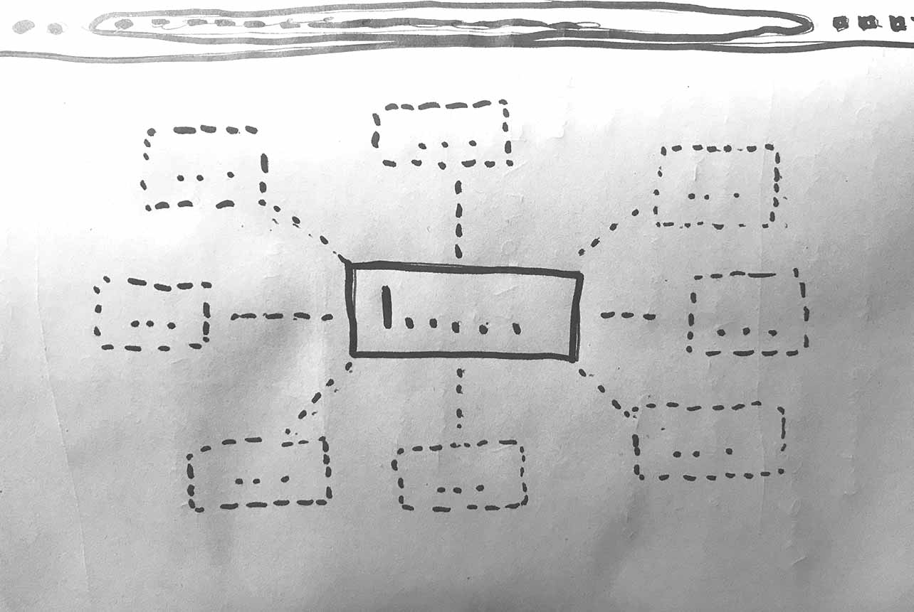

This reading response was inspired by the writing "The Good Room" by Frank Chimero. The reading talked about our relationship with differet tech and how it affects our lifes. First talking about architecture, then mobile application, the theme of capitalism and regret or the lack of true art was talked about. Frank went on to talk a study done about app usage and how majority of the time spent on social apps is regretted by the user. He then talks about how applications that are used as a getaway or 1-1 with technology are often not regretted. I decided for the website concept sketch that I would sketch out a website used to brainstorm ideas. Using the concept of a "Mind Map" the person on the website can fill out and build out a web of thoughts to come to conclusions.
